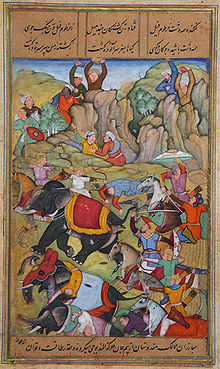

South Asia|Countries
"Click the contery name & go for known about of contery"
Area: 5,134,641 km2 (1,982,496 sq mi)
Population: 1.94 billion (2020)
Population density: 362.3/km2 (938/sq mi)
GDP (PPP): $15.1 trillion (2022)
GDP (nominal): $4.47 trillion (2022)
GDP per capita: $2,350 (nominal) (2022)
$8,000 (PPP): (2022)
HDI Increase: 0.641 (2019)(medium)
Ethnic group:s Indo-Aryan, Iranian, Dravidian, Sino-Tibetan, Austroasiatic, Turkic etc.
Religions: Hinduism, Islam, Christianity, Buddhism, Sikhism, Jainism, Zoroastrianism, Irreligion
Demonym South Asian
Countries
8 states
Dependencies: British Indian Ocean Territory (United Kingdom)
Languages:
Official languages: Other languages
Time zones: 5 time zones
Internet TLD: .af, .bd, .bt, .in, .io, .lk, .mv, .np, .pk
Calling code:Zone 8 & 9
South Asia is the southern subregion of Asia,
which is defined in both geographical and
ethnic-cultural terms. The region consists of the countries of Afghanistan,[note 1]
Bangladesh, Bhutan, India, Maldives, Nepal, Pakistan, and Sri Lanka.Topographically,
it is dominated by the Indian subcontinent and defined largely by the Indian Ocean on the
south, and the Himalayas, Karakoram, and Pamir mountains on the north. The Amu Darya, which
rises north of the Hindu Kush, forms part of the northwestern border. On land (clockwise),
South Asia is bounded by Western Asia, Central Asia, East Asia, and Southeast Asia.
The South Asian Association for Regional Cooperation (SAARC) is an economic
cooperation organization in the region which was established in 1985 and includes
all eight nations comprising South Asia. South Asia covers about 5.2 million km2
(2.0 million sq mi), which is 11.71% of the Asian continent or 3.5% of the world's
land surface area. The population of South Asia is about 1.9 billion or about
one-fourth of the world's population, making it both the most populous and the most
densely populated geographical region in the world.
In 2010, South Asia had the world's largest populations of Hindus, Muslims, Sikhs, Jains,
and Zoroastrians.[10] South Asia alone accounts for 98.47% of Hindus, 90.5% of Sikhs,
and 31% of Muslims worldwide, as well as 35 million Christians and 25 million Buddhists.
Definition
Various definitions of South Asia, including the definition by the United Nations geoscheme
which was created for "statistical convenience and does not imply any assumption regarding
political or other affiliation of countries or territories."
Modern definitions of South Asia are consistent in including Afghanistan, Bangladesh, Bhutan,
India, Maldives, Nepal, Pakistan, and Sri Lanka as the constituent countries.
Afghanistan is, however, considered by some to be a part of Central Asia, Western Asia,
or the Middle East. After the Second Anglo-Afghan War, it was a
British protectorate until 1919. On the other hand, Myanmar (Burma), administered
as a part of the British Raj between 1886 and 1937[26] and now largely considered a part of
Southeast Asia as a member state of ASEAN, is also sometimes included.[20][21][27] But the
Aden Colony, British Somaliland and Singapore, though administered at various times under
the British Raj, have never been proposed as any part of South Asia.[28] The region may
also include the disputed territory of Aksai Chin, which was part of the British Indian
princely state of Jammu and Kashmir, now administered as part of the Chinese autonomous
region of Xinjiang but also claimed by India.
The geographical extent is not clear cut as systemic and foreign policy orientations of its
constituents are quite asymmetrical. Beyond the core territories of the British Raj or
the British Indian Empire, there is a high degree of variation as to which other countries
are included in South Asia. There is no clear boundary – geographical,
geopolitical, socio-cultural, economical or historical – between South Asia and other
parts of Asia, especially the Middle East and Southeast Asia.
The common definition of South Asia is largely inherited from the administrative boundaries of
the British Raj,[34] with several exceptions. The current territories of Bangladesh, India,
and Pakistan which were the core territories of the British Empire from 1857 to 1947 also
form the core territories of South Asia. The mountain countries of Nepal and Bhutan, two independent countries that were not part of the British Raj, and the
island countries of Sri Lanka and Maldives are generally included. By various definitions
based on substantially different reasons, the British Indian Ocean Territory and the Tibet
Autonomous Region are included as well. The 562 princely states that were protected by but not directly ruled by the British Raj became administrative
parts of South Asia upon joining India or Pakistan.
United Nations cartographic map of South Asia. However, the United Nations does not endorse
any definitions or area boundaries.[note 2]
The South Asian Association for Regional Cooperation (SAARC), a contiguous block of countries,
started in 1985 with seven countries – Bangladesh, Bhutan, India, the Maldives, Nepal,
Pakistan and Sri Lanka – and admitted Afghanistan as an eighth member in 2007.
China and Myanmar have also applied for the status of full members of SAARC. The
South Asia Free Trade Agreement admitted Afghanistan in 2011.
The World Bank and United Nations Children's Fund (UNICEF) recognizes the eight SAARC
countries as South Asia, The Hirschman–Herfindahl index of the United Nations
Economic and Social Commission for Asia and the Pacific for the region excludes Afghanistan
from South Asia.[57] Population Information Network (POPIN) excludes Maldives which is
included as a member Pacific POPIN subregional network. The United Nations Statistics
Division's scheme of sub-regions, for statistical purpose, includes Iran along with
all eight members of the SAARC as part of Southern Asia.
The boundaries of South Asia vary based on how the region is defined. South Asia's northern,
eastern, and western boundaries vary based on definitions used, while the Indian Ocean
is the southern periphery. Most of this region rests on the Indian Plate and is isolated
from the rest of Asia by mountain barriers. Much of the region consists of a
peninsula in south-central Asia, rather resembling a diamond which is delineated by the
Himalayas on the north, the Hindu Kush in the west, and the Arakanese in the east,
and which extends southward into the Indian Ocean with the Arabian Sea to the southwest
and the Bay of Bengal to the southeast.
While South Asia had never been a coherent geopolitical region, it has a distinct geographical
identity
The terms "Indian subcontinent" and "South Asia" are sometimes used interchangeably. [63][66] The Indian subcontinent is largely a geological term referring to the land mass that
drifted northeastwards from ancient Gondwana, colliding with the Eurasian plate nearly 55
million years ago, towards the end of Palaeocene. This geological region largely includes
Bangladesh, Bhutan, India, Maldives, Nepal, Pakistan and Sri Lanka.[67] Historians Catherine
Asher and Cynthia Talbot state that the term "Indian subcontinent" describes a natural
physical landmass in South Asia that has been relatively isolated from the rest of Eurasia
.
The use of the term Indian subcontinent began in the British Empire, and has been a
term particularly common in its successors. South Asia as the preferred term is
particularly common when scholars or officials seek to differentiate this region from
East Asia.[69] According to historians Sugata Bose and Ayesha Jalal, the Indian
subcontinent has come to be known as South Asia "in more recent and neutral parlance.
" This "neutral" notion refers to the concerns of Pakistan and Bangladesh, particularly
given the recurring conflicts between India and Pakistan, wherein the dominant placement of
"India" as a prefix before the subcontinent might offend some political sentiments.
However, in Pakistan, the term "South Asia" is considered too India-centric and was
banned until 1989 after the death of Zia ul Haq.[71] This region has also been labelled as
"India" (in its classical and pre-modern sense) and "Greater India".
According to Robert M. Cutler – a scholar of Political Science at Carleton University,
the terms South Asia, Southwest Asia, and Central Asia are distinct, but the confusion and
disagreements have arisen due to the geopolitical movement to enlarge these regions into
Greater South Asia, Greater Southwest Asia, and Greater Central Asia. The frontier of Greater
South Asia, states Cutler, between 2001 and 2006 has been geopolitically extended to eastern
Iran and western Afghanistan in the west, and in the north to northeastern Iran, northern
Afghanistan, and southern Uzbekistan.
Identification with a South Asian identity was found to be significantly low among respondents
in an older two-year survey across Bangladesh, India, Nepal, Pakistan, and Sri Lanka.
History
The Indus Valley civilization, which spread and flourished in the northwestern part of South Asia from c.
3300 to 1300 BCE in present-day Pakistan, Northern India and Afghanistan, was the first major civilization
in South Asia.[75] A sophisticated and technologically advanced urban culture developed in the Mature Harappan
period, from 2600 to 1900 BCE.[76] According to anthropologist Possehl, the Indus Valley civilization provides
a logical, if somewhat arbitrary, starting point for South Asian religions, but these links from the Indus religion
to later-day South Asian traditions are subject to scholarly dispute.
The Trimurti is the trinity of supreme divinity in Hinduism, typically Brahma the creator,
Vishnu the preserver, and Shiva the destroyer
The Vedic period, named after the Vedic religion of the Indo-Aryans,[note 5] lasted from c.
1900 to 500 BCE.[79][80] The Indo-Aryans were Indo-European pastoralists[81] who migrated
into north-western India after the collapse of the Indus Valley Civilization,[78][82] Linguistic and
archaeological data show a cultural change after 1500 BCE,[78] with the linguistic and religious data
clearly showing links with Indo-European languages and religion.[83] By about 1200 BCE, the Vedic
culture and agrarian lifestyle was established in the northwest and northern Gangetic plain of South Asia.
Rudimentary state-forms appeared, of which the Kuru-Pañcāla union was the most influential.
The first recorded state-level society in South Asia existed around 1000 BCE.[81] In this period,
states Samuel, emerged the Brahmana and Aranyaka layers of Vedic texts, which merged into the earliest
Upanishads.[88] These texts began to ask the meaning of a ritual, adding increasing levels of philosophical
and metaphysical speculation, or "Hindu synthesis".
Increasing urbanisation of India between 800 and 400 BCE, and possibly the spread of urban diseases, contributed to the rise
of ascetic movements and of new ideas which challenged the orthodox Brahmanism.[90][failed verification] These ideas led to
Sramana movements, of which Mahavira (c. 549–477 BCE), proponent of Jainism, and Buddha (c. 563–483), founder of Buddhism,
were the most prominent icons.
The Greek army led by Alexander the Great stayed in the Hindu Kush region of South Asia for several years and then later
moved into the Indus valley region. Later, the Maurya Empire extended over much of South Asia in the 3rd century BCE.
Buddhism spread beyond south Asia, through northwest into Central Asia. The Bamiyan Buddhas of Afghanistan and the edicts
of Aśoka suggest that the Buddhist monks spread Buddhism (Dharma) in eastern provinces of the Seleucid Empire, and possibly
even farther into Western Asia.[92][93][94] The Theravada school spread south from India in the 3rd century BCE, to Sri
Lanka, later to Southeast Asia.[95] Buddhism, by the last centuries of the 1st millennium BCE, was prominent in the
Himalayan region, Gandhara, Hindu Kush region and Bactria.
From about 500 BCE through about 300 CE, the Vedic-Brahmanic synthesis or "Hindu synthesis" continued.[89] Classical Hindu
and Sramanic (particularly Buddhist) ideas spread within South Asia, as well outside South Asia.[99][100][101] The Gupta
Empire ruled over a large part of the region between 4th and 7th centuries, a period that saw the construction of major
temples, monasteries and universities such as the Nalanda.[102][103][104] During this era, and through the 10th century,
numerous cave monasteries and temples such as the Ajanta Caves, Badami cave temples and Ellora Caves were built in South
Asia.
Medieval era
Islam came as a political power in the fringe of South Asia in 8th century CE when the Arab general Muhammad bin Qasim conquered Sindh, and Multan in Southern Punjab, in modern-day Pakistan.[108] By 962 CE, Hindu and Buddhist kingdoms in South Asia were under a wave of raids from Muslim armies from Central Asia.[109] Among them was Mahmud of Ghazni, who raided and plundered kingdoms in north India from east of the Indus river to west of Yamuna river seventeen times between 997 and 1030.[110] Mahmud of Ghazni raided the treasuries but retracted each time, only extending Islamic rule into western Punjab.
Timur defeats the Sultan of Delhi, Nasir-u Din Mehmud, in the winter of 1397–1398
The wave of raids on north Indian and western Indian kingdoms by Muslim warlords continued after Mahmud of Ghazni, plundering and looting these kingdoms.[113] The raids did not establish or extend permanent boundaries of their Islamic kingdoms. The Ghurid Sultan Mu'izz al-Din Muhammad began a systematic war of expansion into North India in 1173.[114] He sought to carve out a principality for himself by expanding the Islamic world,[110][115] and thus laid the foundation for the Muslim kingdom that became the Delhi Sultanate.[110] Some historians chronicle the Delhi Sultanate from 1192 due to the presence and geographical claims of Mu'izz al-Din in South Asia by that time.

The Delhi Sultanate covered varying parts of South Asia and was ruled by a series of dynasties: Mamluk, Khalji, Tughlaq, Sayyid and Lodi dynasties. Muhammad bin Tughlaq came to power in 1325, launched a war of expansion and the Delhi Sultanate reached it largest geographical reach over the South Asian region during his 26-year rule.[117] A Sunni Sultan, Muhammad bin Tughlaq persecuted non-Muslims such as Hindus, as well as non-Sunni Muslims such as Shia and Mahdi sects.
Revolts against the Delhi Sultanate sprang up in many parts of South Asia during the 14th century. After the death of Muhammad bin Tughlaq, the Bengal Sultanate became independent in 1352 CE in the north eastern regions, as the Delhi Sultanate began disintegrating. The Bengal Sultanate remained in power through the early 16th century. It was reconquered by the armies of the Mughal Empire. The state religion of the Bengal Sultanate was Islam, and the region under its rule, a region that ultimately emerged as the modern nation of Bangladesh, saw a growth of a syncretic form of Islam.[121][122] In the South India, the Hindu Vijayanagara Empire came to power in 1336 and persisted throughout the 16th century. It was ultimately defeated and destroyed by an alliance of Muslim Deccan sultanates at the battle of Talikota.
About 1526, the Punjab governor Dawlat Khan Lodī reached out to the Mughal Babur and invited him to attack Delhi Sultanate. Babur defeated and killed Ibrahim Lodi in the Battle of Panipat in 1526. The death of Ibrahim Lodi ended the Delhi Sultanate, and the Mughal Empire replaced it.
Climate
The climate of this vast region varies considerably from area to area from tropical monsoon in the south to temperate in the north. The variety is influenced by not only the altitude but also by factors such as proximity to the seacoast and the seasonal impact of the monsoons. Southern parts are mostly hot in summers and receive rain during monsoon periods. The northern belt of Indo-Gangetic plains also is hot in summer, but cooler in winter. The mountainous north is colder and receives snowfall at higher altitudes of Himalayan ranges. As the Himalayas block the north-Asian bitter cold winds, the temperatures are considerably moderate in the plains down below. For the most part, the climate of the region is called the Monsoon climate, which keeps the region humid during summer and dry during winter, and favours the cultivation of jute, tea, rice, and various vegetables in this region. South Asia is largely divided into four broad climate zones:
Land and water area
This list includes dependent territories within their sovereign states (including uninhabited territories), but does not include claims on Antarctica. EEZ+TIA is exclusive economic zone (EEZ) plus total internal area (TIA) which includes land and internal waters.
| Co ntery | Area in Km2 | EEZ | Shelf | EEZ+TIA |
|---|---|---|---|---|
| Afghanistan | 652,864 | 0 | 0 | 652,864 |
| Bangladesh | 148,460 | 86,392 | 66,438 | 230,390 |
| Bhutan | 38,394 | 0 | 0 | 38,394 |
| India | 3,287,263 | 2,305,143 | 402,996 | 5,592,406 |
| Nepal | 147,181 | 0 | 0 | 147,181 |
| Maldives | 298 | 923,322 | 34,538 | 923,622 |
| Pakistan | 881,913 | 290,000 | 51,383 | 1,117,911 |
| Sri Lanka | 65,610 | 532,619 | 32,453 | 598,229 |
| Total | 5,221,093 | 4,137,476 | 587,808 | 9,300,997 |